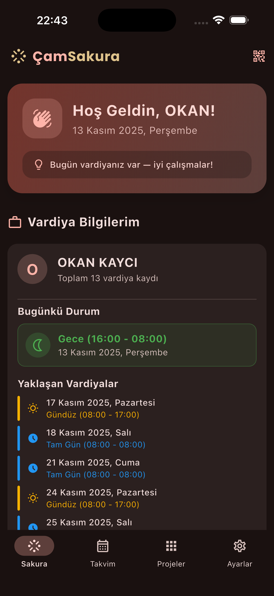
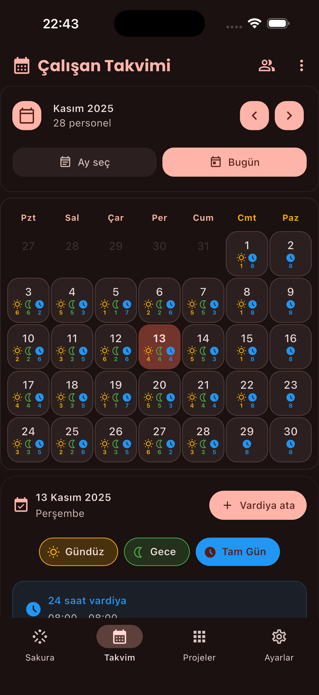
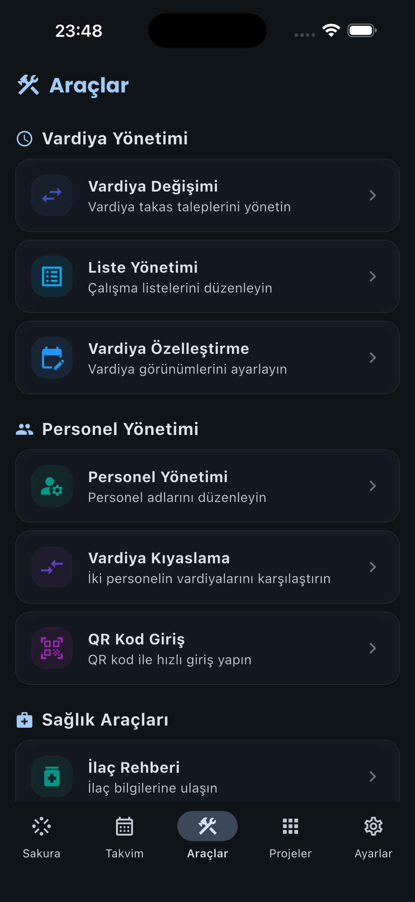

Projeler
Saglik calisaninin
Hastane Vardiya Takibi
Saglik calisaninin
vardiya asistani.
Cam ve Sakura Sehir Hastanesi calisanlari icin ozel olarak tasarlanmis vardiya takibi ve yonetimi uygulamasi.
Sakura, hastane personelinin vardiya programlarini kolayca takip etmeleri ve yonetmeleri icin gelistirildi. Kullanici dostu arayuzu ve klinik araclariyla vardiya yonetimini basitlestirir.
Cam ve Sakura Sehir Hastanesi personeline ozel olarak hazirlanmistir.
Doz Hesaplayici
IlacParasetamol
Hasta kilosu18 kg
Doz15 mg/kg
Onerilen doz270 mg
Ozellikler
Vardiya ve klinik, tek uygulamada
Vardiyalarini yonet, degisim yap ve klinik araclara aninda eris.
Vardiya Takibi
Vardiya takvimini kolayca gor, planla ve yonet.
Vardiya Degisimi
Meslektaslarinla vardiya degisimini pratik sekilde yap.
Ilac Rehberi
Sik kullanilan ilaclara ve bilgilerine hizlica ulas.
Doz Hesaplayici
Kilo ve doza gore ilac miktarini guvenle hesapla.
Arayuz
Uygulamadan gorunumler



Vardiyan artik cok daha kolay
Sakura'yi indir, hastane vardiyalarini eline al.